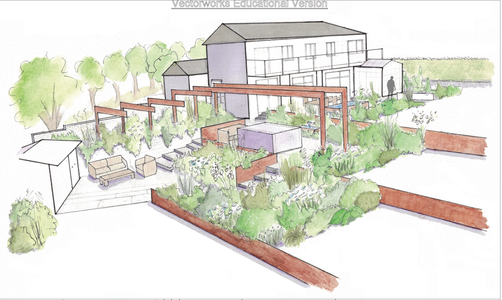
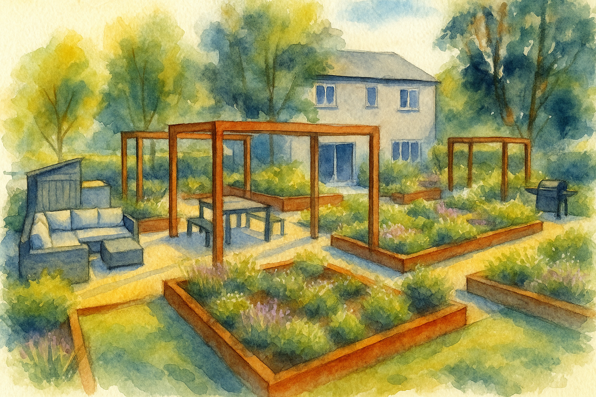

Training for Design Practitioners covers structured programmes and self-directed learning pathways that equip designers—particularly in landscape, product, and spatial disciplines—with practical AI literacy, covering generative image tools, RAG-based knowledge management, client communication automation, and AI-assisted rendering workflows for immediate professional application.
Training for Design Practitioners covers structured programmes and self-directed learning pathways that equip designers—particularly in landscape, product, and spatial disciplines—with practical AI literacy, covering generative image tools, RAG-based knowledge management, client communication automation, and AI-assisted rendering workflows for immediate professional application.
Semantic Classification
Content
Insights about AI for small businesses
- Primary Recommendation: Google Gemini (Advanced Subscription)
- Integrates deeply with Google Workspace (Docs, Slides, Drive).
- Provides cloud storage (2TB with subscription).
- Offers powerful mobile app features (voice interaction, transcription, image recognition).
- Suitable for general business tasks, writing, basic brainstorming, and initial concept generation.
- Cost: ~$20/month (mentioned as 20 quid).
- Secondary/Specialized Tool: ChatGPT (Potentially Subscription)
- Currently superior for specific image manipulation tasks (e.g., placing objects accurately within an existing image, iterative image editing).
- Consider subscribing if advanced, real-time image editing becomes a critical business need not met by Gemini.
- Local AI: Mentioned briefly for transcription but quickly superseded by cloud recommendations for broader utility.
- Other Tools Mentioned:
- Obsidian: Powerful (free) note-taking and knowledge management app using markdown. Recommended for organizing AI-generated ideas and notes long-term.
- Mermaid: Diagram-as-code tool that AI (like Gemini) can generate output for (e.g., Gantt charts). Useful for structured visualization.
- Vectorworks: existing design software. AI integration is currently limited by Vectorworks itself, but internal plugins might exist (like style transfer).
- AI as a Productivity Multiplier: AI can significantly speed up tasks like drafting text, generating ideas, creating initial visuals, and summarizing information.
- The “Jagged Frontier”: AI capabilities are inconsistent and change rapidly. Some tasks work well, others fail unexpectedly. Don’t assume uniform competence.
- Hyper-Personalization: AI enables tailoring outputs (designs, presentations, communication) specifically to individual client styles, preferences, and contexts (e.g., matching design visuals to a client’s home art style). This is a key value proposition.
- Shift in Human Value: As AI handles more tasks, human value shifts towards:
- Personal relationships and trust.
- Risk management and accountability (clients hire you, not the AI).
- Expert oversight, curation, and refinement of AI outputs.
- Understanding client needs deeply (the “why”).
- Creative direction and strategic thinking.
- Information Overload: AI makes generating information easy, increasing the need for effective information management strategies.
- AI Doesn’t Replace Expertise (Yet): AI can generate plausible content but requires knowledgeable human oversight to check accuracy, relevance, and quality (e.g., checking plant suitability, design principles).
- Start with Gemini: Focus initial efforts on learning and integrating Gemini due to its ecosystem integration and suitability for core business tasks.
- Embrace Experimentation: Be prepared to try things, fail quickly, and iterate. Don’t get discouraged if a prompt doesn’t work; rephrase or try a different approach.
- Use Voice Interaction: Leverage the Gemini mobile app’s voice capabilities for note-taking, brainstorming, and information capture while on the go (walking, driving). Treat it like an advanced dictaphone that can also analyze and structure information.
- Develop Prompting Skills:
- Be specific with requests.
- Provide context (e.g., target audience, desired style, constraints).
- Define and reuse your own “style” (writing, design philosophy) as part of your prompts.
- Iterate on prompts – refine them based on the output.
- Don’t be afraid to “smash lots of words” into the prompt; more (relevant) detail is often better.
- Leverage AI for Business Foundations: Use AI immediately for tasks like:
- Drafting business plans and marketing plans.
- Market research and competitor analysis.
- Generating ideas for lead generation.
- Creating initial content for websites or social media.
- Logo design concepts.
- Use AI for Design Assistance:
- Generate mood boards and concept visualizations quickly.
- Create initial planting plans or Gantt charts (using Mermaid).
- Generate stylized images based on sketches or concepts (potentially using ChatGPT for more control initially).
- Explore AI for creating different visual perspectives or variations of a design idea.
- Integrate with Workflow: Connect Gemini to Google Drive to allow it access to your documents for summarization, analysis, and writing tasks based on your data.
- Don’t Over-Rely on Initial AI Output: Treat AI output as a draft or starting point. Always review, edit, and refine based on your expertise. Don’t read every word it generates initially; focus on the overall structure and key ideas.
- Prioritize Tasks: Focus AI efforts on the most immediate business needs first (e.g., marketing, lead generation) before diving deep into more advanced applications (like complex image editing or video).
- Expect a Learning Curve: Allocate time (suggested 2-3 months) for dedicated exploration and practice to build confidence and proficiency.
- Play and Explore: Regularly experiment with the tools (“fiddle around”) to understand their capabilities and limitations. This is essential due to the rapid changes in AI.
- Focus on Confidence Building: The initial phase is about getting comfortable talking to the AI, trying different prompts, and not being afraid of errors.
- Learn Markdown: Useful for formatting AI outputs and using them in tools like Obsidian. Tell the AI to format responses in markdown.
- Stay Updated (Implicit): The tools change constantly, requiring ongoing learning.
- Client Consultation Prep/Follow-up: Transcribe and summarise meeting notes (using local AI on phone or Gemini).
- Concept Generation: Quickly create mood boards, visual concepts, and planting ideas based on client needs and site photos.
- Visualization: Generate stylized images of proposed designs, potentially matching the client’s aesthetic (using their home/art as inspiration). Create different views (e.g., top-down plan from a perspective sketch).
- Planning & Scheduling: Generate Gantt charts (via Mermaid) for project timelines.
- Plant Information: Quickly look up plant details (Latin names, care requirements, soil pH) and generate care plans.
- Marketing Materials: Draft website copy, social media posts, blog articles, marketing plans.
- Business Planning: Assist in writing the business plan, analyzing the market.
- Lead Generation: Research potential clients (e.g., finding recent planning applications in specific areas - though agentic capabilities are future-facing, analysis of documents is possible).
- Logo/Branding Ideas: Generate initial concepts for branding.
- Challenge: AI generates vast amounts of information quickly, making organization crucial.
- Strategy: Develop a system to capture and retrieve valuable AI interactions and outputs.
- Tools:
- Markdown: Use as a standard format for notes.
- Obsidian: Recommended for building a personal knowledge base, linking ideas, and storing notes long-term.
- Google Drive: Use for storing documents and potentially allowing Gemini access.
- Process: Be deliberate about saving useful AI conversations/outputs and potentially tagging or linking them for future reference (e.g., saving a good prompt, storing generated text in Obsidian).
- It takes a couple of months of pretty serious exploration to find where you are comfortable with AI.
- It typically takes a couple of months of focused exploration to become comfortable with AI tools and workflows.
DO play with tools
Use the tools that come free with where you already keep your data (think Google at this time, but also Perplexity) Start to sort out your data. Learn it’s structure, and whether it’s useful to optimise it. High quality data gives high quality outcomes. See if there’s something on the market that is trustable when your data and product are ready, don’t spread data about too much. Do check if this is worth it. Get an expert opinion. Bloomberg spent around $20M on a model based on their financial data only to find that GPT4 still beats it. Think about integrating the open tooling into your product development, consider the software licenses. Take some legal advice. Use the paid and private version of RunDiffusion to start to play with the open tooling. Fooocus is new and very accessible and on that platform with everything else of value.
The Secret Cyborg Concept and You.
twitter link to the render loading below{{twitter https://twitter.com/emollick/status/1775176524653642164}} Acknowledge that employees are already using AI at work, often without approval. Over half of people using AI at work are doing so without telling their bosses. Microsoft put this number at a staggering 75% Microsoft Work Trends Impact 2024
Statistic Value Percentage of global knowledge workers using generative AI 75% Percentage of AI users who say it helps them save time 90% Percentage of AI users who say it helps them focus on their most important work 85% Percentage of AI users who say it helps them be more creative 84% Percentage of AI users who say it helps them enjoy their work more 83% Percentage of AI users who are bringing their own AI tools to work (BYOAI) 78% Percentage of AI users at small and medium-sized companies who are bringing their own AI to work 80% Percentage of AI users reluctant to admit using AI for their most important tasks 52% Percentage of leaders who would rather hire a less experienced candidate with AI skills than a more experienced candidate without them 71% Percentage of leaders who say early-in-career talent will be given greater responsibilities with AI 77% Create a culture of exploration and openness around AI use. Encourage employees to share how they are using AI to assist their work. Completely rethink and redesign work processes around AI capabilities, rather than just using AI to automate existing processes. Cut down the org chart and regrow it for AI. Let teams develop their own methods for incorporating AI as an “intelligence” that adds to processes. Manage AI more like additional team members than external IT solutions. Align incentives and provide clear guidelines so employees feel empowered to ethically experiment with AI. Build for the rapidly evolving future of AI, not just today’s models. Organizational change takes time, so consider future AI capabilities. Act quickly organizations that wait too long to experiment and adapt processes for AI efficiency gains will fall behind. Provide guidelines for short-term experimentation vs slow top-down solutions. Realize there are only two ways to react to exponential AI change; too early or too late. The capabilities are increasing rapidly, so it’s better to start adapting sooner than later. — working/pages/Adoption of Convergent Technologies.md
- It will ALWAYS help the AI for have more data about you. This can be done in a few ways
- Cloud services offer simplicity and scale, whereas self-hosted models (e.g. running Stable Diffusion locally or deploying your own LLM) give you full control over data and costs.
- Gemini Multimodal Language Model connected to Google Drive and all you data.
- Loading data inline on each session gives precise control but can be time-consuming and requires expertise. Alternatively the platforms can manage this for you.
- Available free with the Instruction-Following Conversational AI System tool. Convenient, but you may find it hard to separate business and personal content, and the process is largely a black box.
- Retrieval Augmented Generation - RAG - Combines your own document store with AI retrieval. Steeper learning curve, but extremely powerful over the medium term for keeping knowledge up to date.
- ‘Markitdown’ for converting Microsoft docs to Markdown
- Obsidian or Logseq for personal knowledge bases
- Notion for collaborative wikis
- Knowledge Graphing can help you to organise semi structured data.
- Obsidian
- Logseq
- Notion
Media Creation
-
Landscape renders using custom Stable Diffusion LoRAs (for example, JJ’s Landscape Render, StreetScape and Ecology Park models on Civitai)
-
General tools such as Midjourney, Stable Diffusion and DALL·E 3


-
- Image processing from drawings
-
JJ’s Landscape Render - XL v1.0 | Stable Diffusion XL LoRA | Civitai
-
JJs StreetScape - XL v1.0 | Stable Diffusion XL LoRA | Civitai
-
JJs Ecology Park - XL v1.0 | Stable Diffusion XL LoRA | Civitai
-
AI-assisted tools like Sustainable Home Visuals AI
-
Experimental generative video platforms (Runway ML Gen-2, PromeAI) for short concept clips
-
- {{video https://youtu.be/0fzvIBO-yLw}}
-
Use Social Media Platform Infrastructure planning tools to schedule posts and analyse engagement
-
Leverage QR codes (for example, AI-powered QR code generators) to link print and digital campaigns
-
marketing grind SME AI Productivity Toolkit
-
QR code
-
co-working engine (not quite sure what that one means)
TODO Vectorworks Plan Visualisation
- Modern AI can transform 2D Vectorworks plans into client-ready visuals in five key formats.
- Vectorworks AI Visualizer (FAQ)
- Works inside Vectorworks 2024+, using your active file or view plus a text prompt.
- Ideal for quick concept iterations (materials, lighting variations).
- Note: not CAD-accurate rendering but excellent for inspirational visuals.
- Veras AI for Vectorworks (EvolveLAB announcement)
- Plugin that uses your 3D model or 2D viewport as a base.
- Photorealistic or stylised renders in seconds with prompt-driven material and ambience overrides.
- Mainstream Text-to-Image Generators
- Export plan or massing views as PNG/JPG and feed into Midjourney, Stable Diffusion (with ControlNet) or DALL·E 3 for high-res concept images.
- Best for early-stage mood boards rather than precise layouts.
- Twinmotion (guide)
- Real-time link via Datasmith; create MP4 or interactive 360 panoramas.
- Supports AI-powered denoising and crowd/traffic generation.
- Enscape for Vectorworks (blog)
- Live rendering inside Vectorworks, with keyframe-based video export and VR standalone packages.
- Experimental AI Video Tools
- Runway ML Gen-2 or PromeAI for short motion clips from still frames (low resolution but quick concept demos).
- Use AI style-transfer plugins (such as Veras prompts for ‘watercolour sketch’ or ‘ink outline’)
- Export views to image-to-image tools (Midjourney, Stable Diffusion with community style models) for watercolour, pencil or comic-book effects
- Adobe Firefly in Photoshop for generative fill on SVG/PDF exports (text-to-image room textures, decorative elements)
- Vectorworks Nomad (app)
- Markerless AR viewer on iOS/Android; place your model at 1 : 1 scale on site without coding.
- Desktop VR via Enscape or Twinmotion
- One-click VR export to headsets (Oculus, Vive) for real-time walkthroughs.
- Custom Game-Engine Solutions
- Import via Datasmith into Unreal Engine or FBX/OBJ into Unity for bespoke interactive apps. AI can assist by auto-generating environment assets or textures.
- Web-Based AR/VR Viewers
- Upload glTF/GLB to platforms like Sketchfab for browser-based AR (USDZ for iOS Quick Look) or VR demos.
- usBIM.planAI (ACCA tool)
- Upload PNG, JPG or PDF plans; AI recognises walls, doors and rooms; outputs IFC for import into Vectorworks.
- Planner 5D AI (service)
- Fast floor-plan recognition from images; yields a basic 3D layout you can reference or rebuild precisely.
- Coohom Floor Plan to 3D (overview)
- One-click conversion with auto-furnished interiors; ideal for rapid prototyping and client approvals.
- Other services (GetFloorPlan, RoomSketcher) offer similar AI-assisted conversions for sketches or scanned plans.
- Vectorworks AI Visualizer (FAQ)
- Start with a simple RAG setup in Logseq or Obsidian linked to your Vectorworks export folder so that every time you update a client plan, your AI system can index it.
- Use the AI Visualizer for rapid concept boards, then refine chosen options in Veras or Enscape for client review.
- Incorporate AR with Vectorworks Nomad on site visits—clients love seeing designs overlaid in real space.
- Keep stylistic consistency by choosing one illustration pipeline (for example, Stable Diffusion plus a ControlNet line-art workflow) and training a small set of prompts or custom LoRAs so that your presentations always look cohesive.